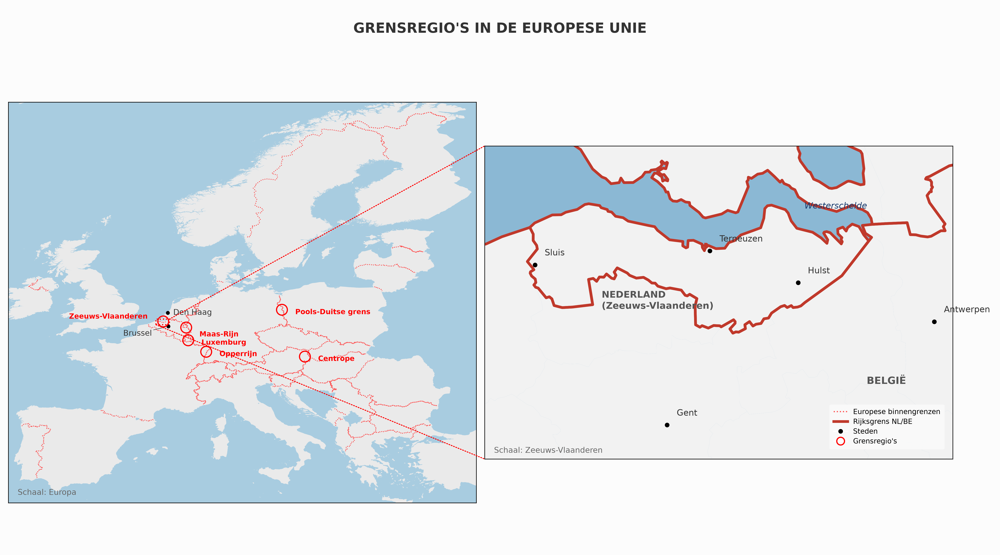

Grensoverschrijdend bevoegdheidsvacuüm in de sociale zekerheid
Auteur: Eric Messa · Versie bijgewerkt: 14 oktober 2026, 07:57

Systeem-Audit is geen klacht. Het is een kaart. Zes documenten die laten zien wat er gebeurt wanneer een burger tussen twee nationale socialezekerheidsstelsels valt. Wat werkt, wat vastloopt, en wat het oplevert.
Systeem-Audit is not a complaint. It is a map. Six documents showing what happens when a citizen falls between two national social security systems. What works, what gets stuck, and what it delivers.
Systeem-Audit ist keine Beschwerde. Es ist eine Karte. Sechs Dokumente, die zeigen, was passiert, wenn ein Bürger zwischen zwei nationale Sozialsysteme fällt. Was funktioniert, wo es stockt, und was es bringt.
Systeem-Audit n'est pas une plainte. C'est une carte. Six documents qui montrent ce qui se passe lorsqu'un citoyen tombe entre deux systèmes nationaux de sécurité sociale. Ce qui fonctionne, ce qui bloque, et ce que cela rapporte.
Dit dossier documenteert wat er gebeurt wanneer een burger tussen twee nationale socialezekerheidsstelsels valt. Vijf documenten, elk met een eigen invalshoek, vertellen hetzelfde verhaal.
Bekijk in het Nederlands →This dossier documents what happens when a citizen falls between two national social security systems. Translation of the Dutch original — in case of doubt, the Dutch version prevails.
View in English →Dieses Dossier dokumentiert, was passiert, wenn ein Bürger zwischen zwei nationale Sozialsysteme fällt. Übersetzung des niederländischen Originals — im Zweifel gilt die niederländische Fassung.
Auf Deutsch ansehen →Ce dossier documente ce qui se passe lorsqu'un citoyen tombe entre deux systèmes nationaux de sécurité sociale. Traduction de l'original néerlandais — en cas de doute, la version néerlandaise fait foi.
Voir en français →🇬🇧Documents A and B remain in Dutch for now — the underlying data are still moving too much.
🇩🇪Die Dokumente A und B bleiben vorerst auf Niederländisch — die zugrunde liegenden Daten bewegen sich noch zu sehr.
🇫🇷Les documents A et B restent pour l'instant en néerlandais — les données sous-jacentes bougent encore trop.
🇪🇺Niet gesubsidieerd door de Europese Unie. Ditzelfde falende systeem dat hier besproken wordt wel.